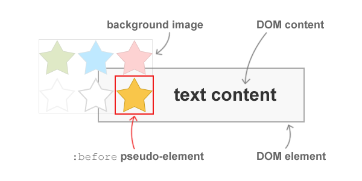
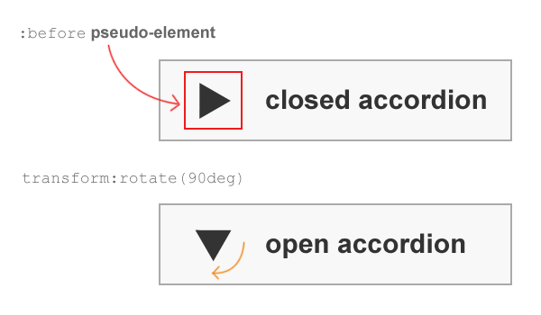
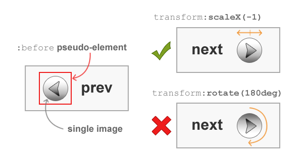
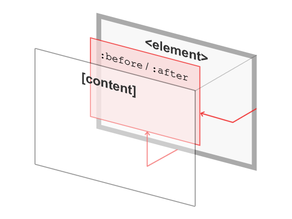

CSS background image hacks
Emulating background image crop, background image opacity, background transforms, and improved background positioning. A few hacks relying on CSS pseudo-elements to emulate features unavailable or not yet widely supported by modern browsers.
Demos: Example CSS background image hacks
Pseudo-element hacks can fill some gaps in existing browser support for CSS features, without resorting to presentational HTML. In some cases, they even make it possible to emulate things that are not currently part of any W3C working draft, like background transforms and background image opacity.
Most of the hacks in this article tie in with the pseudo-element hack described in an earlier article – Multiple Backgrounds and Borders with CSS 2.1. That article already describes how to emulate multiple background support and its demo page shows several other uses of the basic principle. This article presents a few of those effects and applications in greater detail.
Emulating background-crop
Known support: Firefox 3.5+, Opera 10+, Safari 4+, Chrome 4+, IE 8+
Demo: Pseudo background-crop
Background image cropping can be emulated in modern browsers using only CSS 2.1. The principle behind a pseudo background-crop is to apply a background-image to a pseudo-element rather than the element itself. One example would be to crop an image to display in the background. Another would be to crop an image sprite to display icons alongside text in links.

In several cases, using pseudo-elements may have advantages over existing, alternative techniques because it combines their strengths and avoids some of their weaknesses.
Google, Facebook, and Twitter all make use of empty DOM elements to crop dense sprites and display icons next to certain links in their interfaces. The alternative is not to use empty elements but be forced into using multiple images and/or to design sub-optimal image sprites that have their component images spaced out.
Pseudo-elements can be used in much the same way as empty DOM elements. This simultaneously eliminates the need for presentational HTML and doesn’t depend so heavily on an image sprite’s design. Using pseudo-elements for this purpose does have its own drawback – a lack of support in legacy browsers like IE6 and IE7. However, the technique will progressively enhance capable browsers while leaving a perfectly usable experience for incapable browsers.
Example code: cropping a sprite
This example shows how to crop icons that are part of a dense image sprite that uses a 16px × 16px grid. It uses a simple list and specifies a class for each type of action.
<ul class="actions">
<li class="save"><a href="#">Save</a></li>
<li class="delete"><a href="#">Delete</a></li>
<li class="share"><a href="#">Share</a></li>
<li class="comment"><a href="#">Comment</a></li>
</ul>Styling can be applied to present this list in whatever way is needed. From that base, a pseudo-element can be created and then treated as you would an empty, inline DOM element (e.g. <span>).
In this case, the :before pseudo-element is used and sized to match the sprite’s grid unit. It could be sized to whatever dimensions are required to match a section of the sprite that needs to be cropped.
.actions a:before {
content:"";
float:left;
width:16px;
height:16px;
margin:0 5px 0 0;
background:url(sprite.png);
}
.save a:before {background-position:0 -16px;}
.delete a:before {background-position:0 -32px;}
.share a:before {background-position:0 -48px;}
.comment a:before {background-position:0 -64px;}Providing hover, focus, active, and “saved” states is just a case of declaring the correct background position in each case.
.save a:hover:before,
.save a:focus:before,
.save a:active:before {background-position:-16px -16px;}
.saved a:before {background-position:-32px -16px;}Future alternatives
In the future, there will be other alternatives. Firefox 3.6 added -moz-image-rect to allow background images to be cropped. But this is not supported by other browsers and looks likely to be replaced by an alternative proposal (to use fragment identifiers) that is part of the CSS Image Values Module Level 3 specification. As far as I know, no stable release of any modern browser supports the use of fragment identifiers with bitmap images.
Emulating background-transform
Known support: Firefox 3.6+, Opera 10.5+, Safari 4+, Chrome 4+, IE 9+
Demo: Pseudo background-transform
Combining pseudo-elements and transforms makes it possible to emulate background transforms. A pseudo background-transform can be used to rotate, scale, and skew background images and sprites. There is no proposal for background-image transforms, so a pseudo-element hack is one way to emulate it.
Example: rotating a background image
The example of cropping sprites can be further developed by reducing the number of different images used in the sprite. Rather than applying transforms to images in a graphics package, they can be applied in the CSS.

The code to do this is relatively simple and might look something like:
.accordion a:before {
content:"";
float:left;
width:16px;
height:16px;
margin:0 5px 0 0;
background:url(sprite.png) no-repeat 0 0;
}
.accordion.open a:before {
-webkit-transform:rotate(90deg);
-moz-transform:rotate(90deg);
-ms-transform:rotate(90deg);
-o-transform:rotate(90deg);
transform:rotate(90deg);
}To apply a transform to a more conventional background image (e.g., a large graphic sitting behind some content that doesn’t affect the positioning of other components) requires use of the positioning technique detailed in the article Multiple Backgrounds and Borders with CSS 2.1.
It involves setting the background image on a pseudo-element which is then positioned behind the content layer of an element using absolute positioning and z-index.
Example: mirroring a background image
There are instances when mirroring a background image might be desired. The approach is similar to that for rotating an image, but this time uses transform:scale().

Producing an exact mirror of an element or pseudo-element can be done using transform:scaleX(-1), transform:scaleY(-1), and transform:scale(-1,-1) to mirror along the x-axis, y-axis, and both axes, respectively.
The following code is an example of how a pseudo background-transform might be used for pagination links. A pseudo-element displays a single image (or region of a sprite) and is then mirrored. The image’s appearance is such that a rotation cannot produce the desired counterpart. Only a scale operation can do it.
.prev a:before,
.next a:before {
content:"";
float:left;
width:16px;
height:16px;
margin:0 5px 0 0;
background:url(sprite.png) no-repeat 0 0;
}
.next a:before {
float:right;
margin:0 0 0 5px;
-webkit-transform:scaleX(-1);
-moz-transform:scaleX(-1);
-ms-transform:scaleX(-1);
-o-transform:scaleX(-1);
transform:scaleX(-1);
}There is no support for this in IE 8. Even if you’re a fan of using IE filters to work around some missing CSS support, they won’t work on pseudo-elements.
Future alternatives
There don’t seem to be any future alternatives in any CSS working draft. For the moment, it looks like pseudo-element hacks will be needed to emulate effects like background transforms and background perspective without resorting to presentational HTML.
Emulating background-position
Known support: Firefox 3.5+, Opera 10+, Safari 4+, Chrome 4+, IE 8+
Demo: Pseudo background-position
The CSS 2.1 specification limits the values of background-position to offsets from the left and top sides. It’s possible to emulate positioning a background image from the right and bottom sides by applying the background image to a pseudo-element and using it as an additional background layer.

This hack is easily combined with the other hacks in this article. More details on the pseudo background-position hack can be found in the article on Multiple Backgrounds and Borders with CSS 2.1.
Example code
In this example, a pseudo-element is created and placed behind the element’s content layer. The background image is 500px × 300px and declared for the pseudo-element, which is also given dimensions that match those of the image. Since the pseudo-element is absolutely positioned, it can be positioned from the bottom and right of the element using offsets.
#content {
position:relative;
z-index:1;
}
#content:before {
content:"";
position:absolute;
z-index:-1;
bottom:10px;
right:10px;
width:500px;
height:300px;
background:url(image.jpg);
}Future alternatives
There is a part of the CSS Backgrounds and Borders module working draft that describes an improvement to the background-position property to allow positions to be set from any side. At the moment, Opera 11 is the only stable release of a browser that has implemented it.
Emulating background-opacity
Known support: Firefox 3.5+, Opera 10+, Safari 4+, Chrome 4+, IE 9+
Demo: Pseudo background-opacity
Changing the opacity of a pseudo-background is as simple as modifying the value of the opacity property. There is no IE 8 support for opacity and IE filters will not work on pseudo-elements.
Example code
This example code shows a pseudo-element being created and positioned behind the rest of the element’s content so as not to interfere with it. The pseudo-element is then sized to fit the element using offsets (but could be offset by other values or given an explicit size), given a background image, and has its opacity changed.
#content {
position:relative;
z-index:1;
}
#content:before {
content:"";
position:absolute;
z-index:-1;
top:0;
bottom:0;
left:0;
right:0;
background:url(image.jpg);
opacity:0.7;
}Notes
For now, and as far as I am aware, using CSS 2.1 pseudo-elements is the only widely supported (and backwards compatible) way to emulate background image crop, background transform, background opacity, and improved background positioning with semantic HTML.
Even when alternatives in CSS working drafts (e.g., the improved background-position and use of fragment identifiers) are widely implemented, pseudo-element background-image hacks will still have the advantage of letting you use other CSS properties like opacity, border-radius, border-image, box-shadow, transforms, etc., which may prove useful in certain situations. It can’t hurt to be aware of these options.
It’s worth mentioning that although you can only generate 2 pseudo-elements from a DOM element, in many cases you can easily use descendant elements to provide more pseudo-elements to play with. This idea was used to help create the rotated example on the CSS drop-shadows demo page and several of the CSS3 examples at the bottom of the pure CSS speech bubbles demo page.
Thanks to Mathias Bynens for reading and giving feedback on a draft of this article.
Comment on this post
Please wrap code fragments in <code> tags, wrap blocks of code in <pre><code>, and use JsFiddle to post working examples.
14 comments on “CSS background image hacks”
Niels Matthijs says…
I love the sprite-cropping technique. Background positioning technique is also quite awesome. Lacking IE < 8 support is a bit of a downer though :)
onioneye says…
Ever since I started reading your blog, my HTML got a lot more semantic and readable. I wonder why? Must be because of those great pseudo elements :)
Zoe Gillenwater says…
Very clever stuff! Love it. For IE 6 and 7 support, one could use Dean Edwards IE7.js script to add support for generated content. There are probably other scripts that do this as well. And of course, if just used for progressive enhancement, no harm at all if not everyone sees the effects.
bkeller says…
Great stuff, I look forward to using these techniques immediately.
Juan says…
Thanks! I’ve been avoiding using :before and I think you just gave me a good reason to face it’s usefulness.
Fawad Hassan says…
I like the way you explained the concepts. Very nice!
Insite Advice says…
These are great ways to really exploit the power of css. These techniques are a great way to clean up my HTML
Thanks
Theo says…
Great stuff, very well explained. A simple yet excellent overview, thanks!
Darren Lovelock says…
I’m currently updating my own site and adding all the background images as sprites, has been quite tricky when taking into account text resizing which could reveal other parts of images, will definitely be using the background crop hack – that will make it a lot more easy, thanks!
Norik Davtian says…
I love the way you style your articles with nice visuals and Known supported browsers, makes it enjoyable to read all the way.
Keep it coming, will come back to read more :)
CSS Web Standards says…
Good flow of the content which make it interesting to read. One good thing I must appreciate about this blog is, it’s own typography, beautiful use of font and white space.
Jeff says…
Thank you so much for helping me make sense of pseudo-elements. This article has changed the way I build pages!
Biztek says…
CSS the power of web. Great stuff, very well explained. A simple yet excellent overview, thanks thanks thanks
Iano says…
Thanks Always struggle with designing backgrounds for websites and implementing them with CSS/HTML looking forward to using some of these techniques